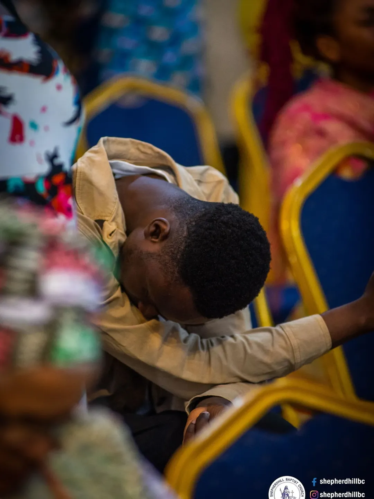

Moments & Memories
Our Gallery
Scenes of worship, thanksgiving, family, and joy from Shepherdhill Baptist Church. A glimpse of the grace and glory God is releasing in our midst.
Lifting Holy Hands
Moments of Prayer & Praise
Captured from our prayer altars, Sunday worship, and Thursday Thanksgiving services. Tap any photo to view full screen.
Hearts surrendered in worship
Our church family — Thanksgiving Thursday

Bowed before the Lord
Walking in His grace
Intercession at the altar
Joy in the presence of God
Lifting holy hands, bowed low
Faces of thanksgiving
Catch the Moments Live
Follow us on Instagram and Facebook for fresh photos, sermon clips, and weekly highlights.